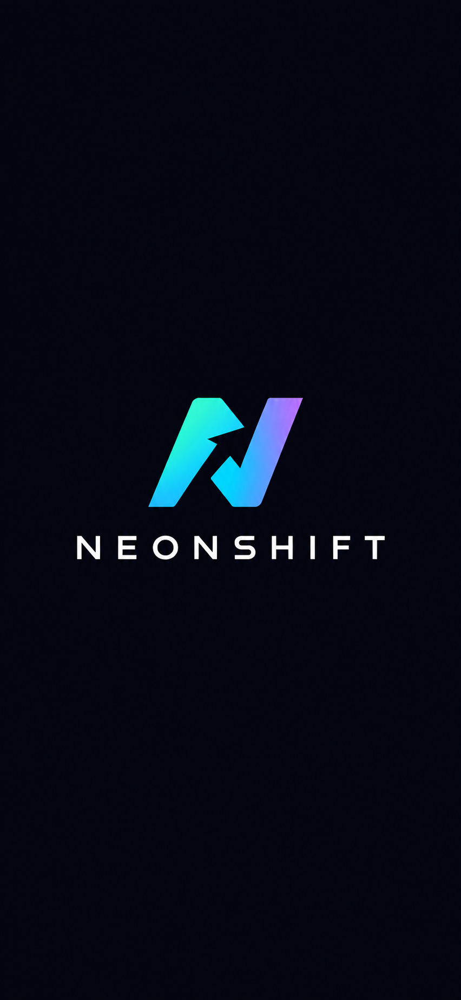
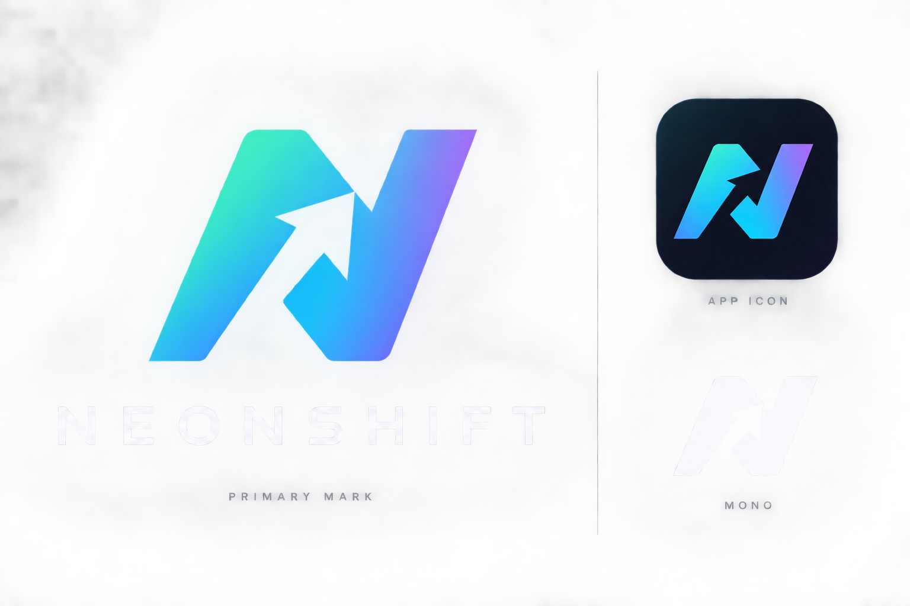
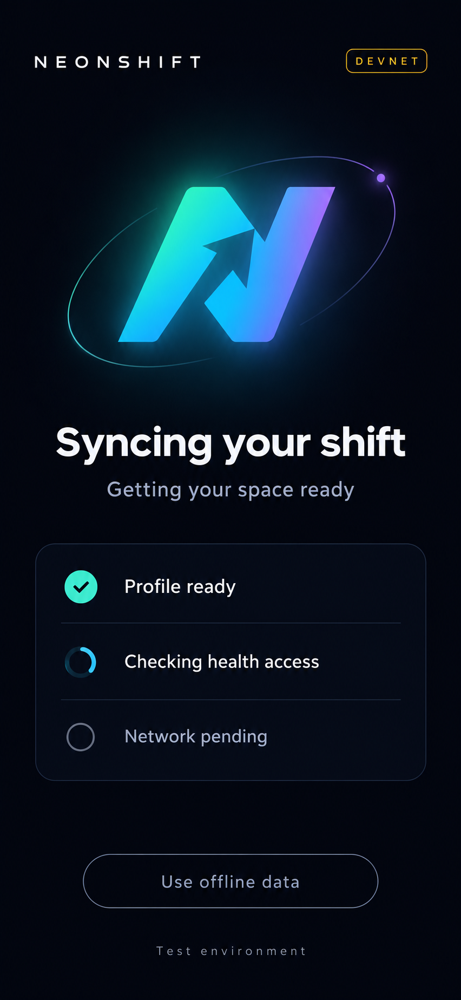
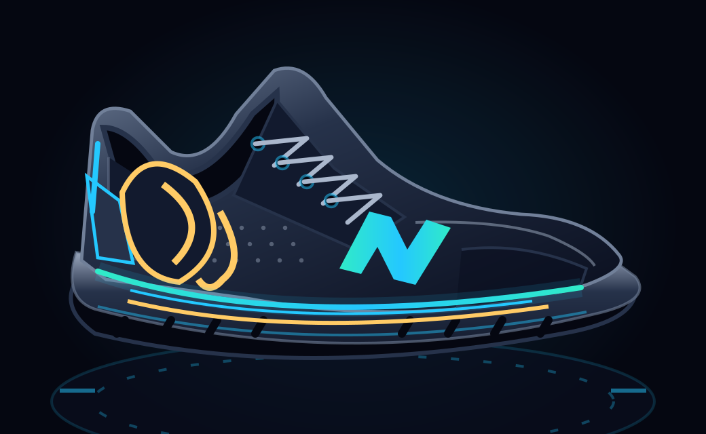
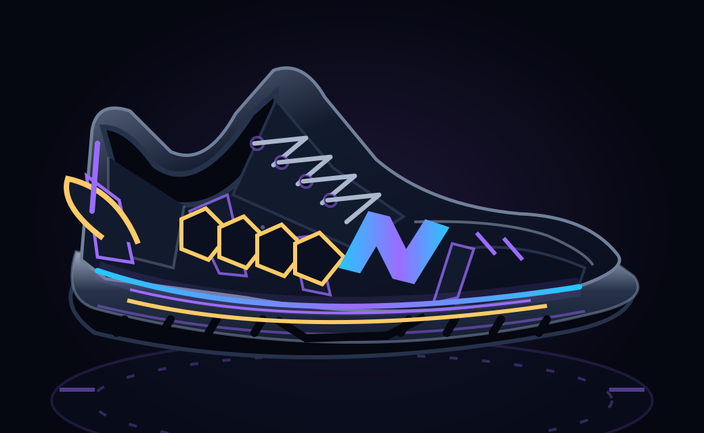
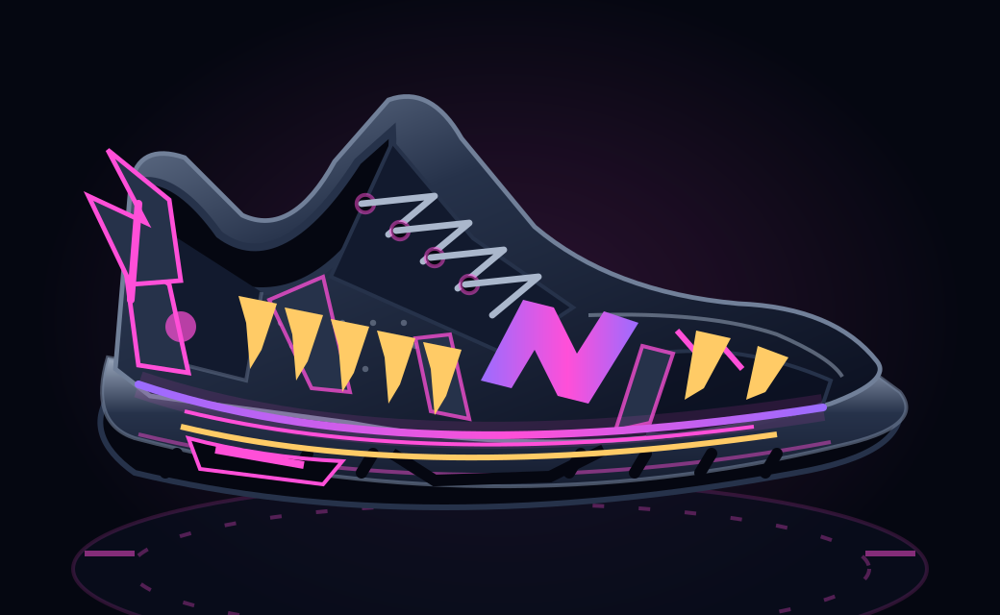
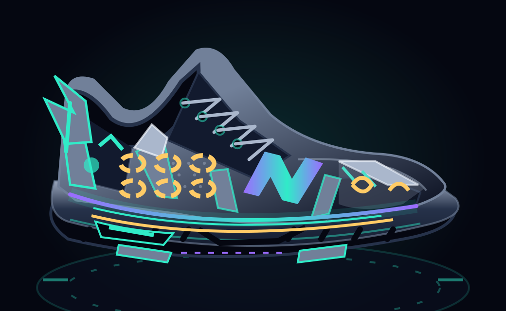
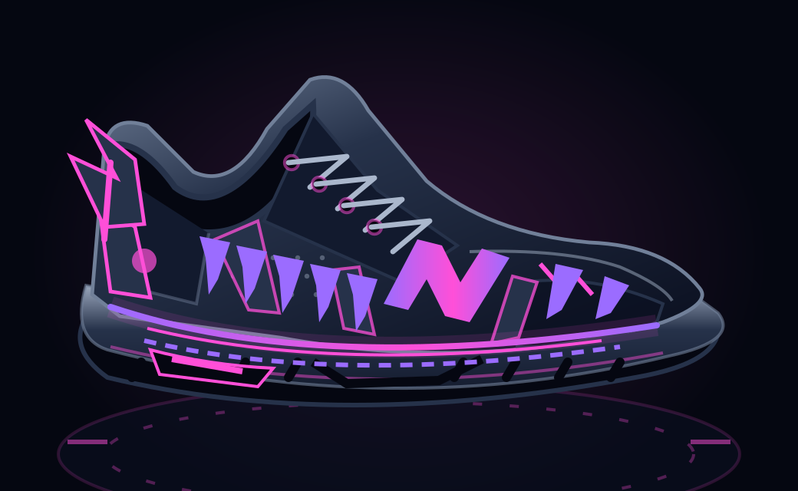
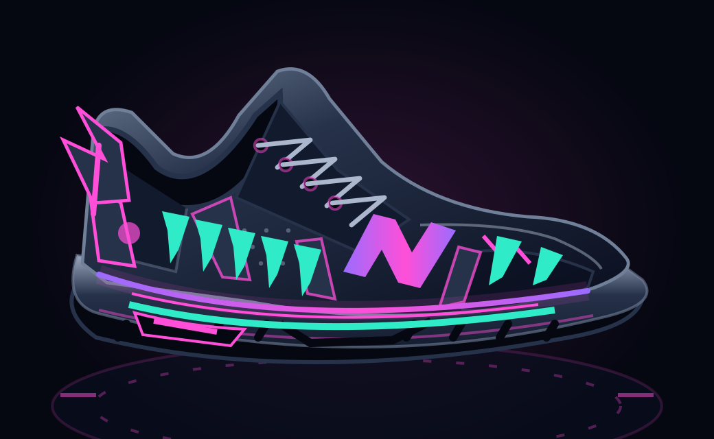

NeonShift 中文募資草稿NEONSHIFT / 運動 × 保育 × 可持續合作
為自己而動，為棲地同行
募資討論稿・2026.09.19｜永續策略／商業與數值假設待驗證
01
NeonShift 賽博躍遷
把日常運動、在地保育與合作活動，
串成能持續參與、可查核的行動。
從 Solana Mobile 社群切入
面向跑團、主辦方與運動品牌的合作平台

NEONSHIFT / 投資人簡報草稿
活動結束後，關係不應歸零
待訪談驗證的三個痛點：參與者難持續、主辦方難回訪、品牌難衡量。
募資討論稿・2026.09.19｜永續策略／商業與數值假設待驗證
02
01
參與者
健康紀錄與活動成績分散
缺乏回到下一次活動的理由
02
活動主辦方
宣傳、報到、發放與成績分開
難追蹤跨場次參與
03
合作品牌
一次曝光之後缺少後續連結
需要看見到場與實際領取
NEONSHIFT / 投資人簡報草稿
建立「日常任務 → 活動 → 再參與」循環
核心價值是提升參與與回訪；獎勵是體驗的一部分。
募資討論稿・2026.09.19｜永續策略／商業與數值假設待驗證
03
01
日常養成
步數與睡眠任務
成長型跑鞋與進度回饋
02
線下參與
合作活動宣傳與報名
NFC／QR 報到、贈品與徽章
03
持續連結
活動成績冊與個人歷程
下一場邀請與回訪衡量
NEONSHIFT / 投資人簡報草稿
用同一個品牌體驗，承接線上與現場
深藍黑底、青綠至紫色的 N 躍遷識別；可延伸至活動、NFC 載具與成績憑證。
募資討論稿・2026.09.19｜永續策略／商業與數值假設待驗證
04


既有視覺設計稿
非正式上線截圖
NEONSHIFT / 投資人簡報草稿
合作活動，是第一個可收費的切入口
案例示意：跑團／品牌共同辦理一場 300 人活動，並追蹤後續回訪。
募資討論稿・2026.09.19｜永續策略／商業與數值假設待驗證
05
01
活動前
共同宣傳與來源追蹤
報名名單與參加規則
02
活動中
NFC／QR 到場核驗
庫存控管、贈品與數位徽章
03
活動後
主辦方確認成績
成果報告與下一場參與
NEONSHIFT / 產業規模｜2024 年實績
產業規模足夠大，但必須聚焦付費場景
全球身體活動經濟包含運動服務、用品與科技；數字不能當成平台可取得的營收。
募資討論稿・2026.09.19｜永續策略／商業與數值假設待驗證
06
S1｜Global Wellness Institute｜2025 Global Wellness Economy Monitor
1.14 兆
美元｜全球身體活動
2024 年：1,143.9 十億美元
859 億
美元｜全球健身科技
包含硬體、軟體及服務
3,197 億
美元｜亞太身體活動
區域背景，非活動軟體市場
NEONSHIFT / 市場動能
數位運動正在成長，現場經營仍需驗證
外部資料支持需求背景；NeonShift 的商業可行性仍要用付費試辦證明。
募資討論稿・2026.09.19｜永續策略／商業與數值假設待驗證
07
S1｜Global Wellness Institute｜2025 Global Wellness Economy Monitor
01
12.1%
2024 年全球健身科技
較前一年成長率 [S1]
02
21.5%
健身 App／串流／隨選服務
2019–2024 年複合成長率 [S1]
03
社群切入
先以 Seeker 社群測試參與
再驗證主辦方與品牌付費
NEONSHIFT / 市場估算｜情境而非市場普查
從可接觸的主辦方，推算收入機會
建議先驗證台灣跑團／活動合作，再評估跨區擴張；地區選擇為待確認策略。
募資討論稿・2026.09.19｜永續策略／商業與數值假設待驗證
08
01
產業上界
全球健身科技：859 億美元
含硬體，僅作參考 [S1]
02
服務市場情境
假設 1,000 家合格主辦方
每年 6 場 × 每場 NT$30,000
＝ NT$1.8 億／年
03
早期取得情境
20 家付費主辦方
每年 4 場 × 每場 NT$30,000
＝ NT$240 萬／年
NEONSHIFT / 商業模式提案
先讓主辦方與品牌付費，再擴大會員價值
收費依服務價值；不將代幣升值或出售健康資料當作營收來源。
募資討論稿・2026.09.19｜永續策略／商業與數值假設待驗證
09
01
活動服務費
每場 NT$30,000 起（假設）
報名、核銷、成績與報告
硬體／現場人力另報價
02
品牌合作專案
每案 NT$100,000（假設）
主題任務與成效彙總
獎品與媒體費另外編列
03
後續訂閱
多場活動管理與進階報告
需先驗證反覆使用與續約
尚未納入收入模型
NEONSHIFT / 市場進入策略｜建議
讓每一場活動，成為下一場的獲客入口
募資討論稿・2026.09.19｜永續策略／商業與數值假設待驗證
10
01
01｜共同試辦
先找 3 家設計合作夥伴
跑團、主辦方、運動品牌
確認痛點與付費意願
02
02｜可複製交付
統一報到／發放／成績流程
衡量每場交付成本
以真實案例取得續辦
03
03｜跨場次回訪
追蹤同意參與者的再報名
共同品牌導流
先擴同客戶，再擴地區
NEONSHIFT / 定位與替代方案
差異來自跨場次經營，而非單一 NFC 功能
以下比較的是使用情境，不是宣稱所有競品都缺少某項功能。
募資討論稿・2026.09.19｜永續策略／商業與數值假設待驗證
11
01
既有替代方案
運動紀錄 App：日常數據
活動工具：單場交付
品牌行銷：短期觸及
02
NeonShift 提案
日常任務＋合作活動＋成績冊
把報到、領取與回訪串連
提供可衡量合作成果
03
待建立的優勢
穩定交付與主辦方續約
經同意的跨場參與歷程
合作密度與品牌辨識
NEONSHIFT / 產品體驗｜已實作，待實機驗收
讓新玩家看懂玩法，讓努力值得紀念
新手指南 → 每日任務 → 裝備成長 → 成就收藏；從理解玩法到感受榮耀。
募資討論稿・2026.09.19｜永續策略／商業與數值假設待驗證
12
01
第一次就知道怎麼玩
四張玩法卡＋首次四步
可略過、個人頁可重看
繁中／英文同步
02
取得 NFT 的榮耀感
卡背翻轉、金色光環
粒子與卡面掃光
新領取成功才揭曉
03
升降等都有回饋
升等：能量擴散與進場
降等：冷色收縮與下沉
支援減少動態效果
NEONSHIFT / 跑鞋設計｜App 已實作，待實機美術驗收
荒野守護：每次升階，認識一種生命
Lv.1 保留普通「原點」；Lv.2 起將動物特徵融入鞋款。遊戲等級不代表物種價值或瀕危程度。
募資討論稿・2026.09.19｜永續策略／商業與數值假設待驗證
13
LV.2 / WILD GUARDIANS
森行・亞洲象

象耳護片 × 象鼻曲線
棲地破碎與人象共存
LV.3 / WILD GUARDIANS
潮盾・玳瑁

重疊龜甲 × 鰭狀後跟
珊瑚礁與海龜保護
LV.4 / WILD GUARDIANS
林焰・老虎

漸尖虎斑 × 森林光軌
森林、獵物與反盜獵
LV.5 / WILD GUARDIANS
雪影・遠東豹

斷環豹紋 × 冬毛鞋頭
森林廊道與棲地連通
SVG 設計示意，非實機截圖；數位仿生材質，不使用動物皮毛、象牙或玳瑁。
NEONSHIFT / 成長盲盒｜外觀玩法第一版
同一階跑鞋，也有屬於你的細節
達到鞋階 → 揭曉細節款 → 保留個人樣式；從每日進度延伸到收藏與分享。
募資討論稿・2026.09.19｜永續策略／商業與數值假設待驗證
14
晨曦縫光
金色縫線與動物紋樣
暮色紋跡

紫色紋樣與虛線軌
極光軌線

薄荷紋樣與加粗光軌
同錢包固定款式 · 僅外觀差異 · 不增加能力 · 無付費重抽
NEONSHIFT / 保育教育 × 系列延伸
從收藏一雙鞋，到認識牠的棲地
把保育故事放進鞋款介紹與升階時刻；將未來合作建立在可辨識的系列內容上。
募資討論稿・2026.09.19｜永續策略／商業與數值假設待驗證
15
01
現在｜保育介紹
中英雙語物種故事
棲地、威脅與一個小行動
附可開啟的 WWF 來源
02
下一步｜系列共創
品牌／創作者聯名提案
主題鞋面與活動收藏
授權、合作與切換待完成
03
未來｜資產與成效
獨立款式 NFT metadata
可追溯的款式取得紀錄
回訪與閱讀成效待驗證
WWF｜亞洲象
WWF｜玳瑁
WWF｜老虎
WWF｜遠東豹
保育資料查核：2026.09.17；目前沒有已成立的保育合作、捐款或聯名。
NEONSHIFT / 新增產品設計｜待實作
讓每次運動，連回自己的成長
跑鞋外觀、同步選擇與私人運動日誌，形成持續回顧的理由。
募資討論稿・2026.09.19｜永續策略／商業與數值假設待驗證
16
01
跑鞋 × 棲地背景
已取得跑鞋自由切換
森林／海洋等主題連動
背景可關閉、記住偏好
外觀不改有效等級
02
連網 × 自主同步
自動同步預設關閉
按運動時間由舊到新
較早失敗先處理再續傳
晚到紀錄重算、避免重複
03
Activity × 個人回顧
月曆／清單與月份總覽
跑步、健走與散步篩選
單次詳情、分段與來源
離線可看本機紀錄
設計預覽｜既有清單／手動同步需擴充；新增開關、有序佇列與外觀切換尚待實作。
NEONSHIFT / 共同方向｜策略提案
把同一群人，連結到持續的棲地行動
運動持續做、棲地少打擾、資金說清楚、成果有依據。
募資討論稿・2026.09.19｜永續策略／商業與數值假設待驗證
17
01
日常｜為自己而動
免費成長與成就收藏
物種故事＋保育理解
驗證無金錢獎勵的留存
02
行動｜為棲地同行
在地夥伴共編任務
既有路線與低干擾參與
尊重場域承載與停辦
03
延續｜讓合作再發生
品牌付費支持活動服務
保育款與收入分開對帳
用再參與與續辦驗證
首選：一個生活圈、一個跑團、一個保育方、一個付費品牌；皆為招募目標。
NEONSHIFT / Solana／SOL｜基礎設施與產品邊界
SOL 的角色：支持可信的紀錄與協作
公開紀錄有助核對；現實中的保育成果，仍由夥伴確認。
募資討論稿・2026.09.19｜永續策略／商業與數值假設待驗證
18
01
適合承接
里程碑與成果版本
經同意的資金對帳紀錄
跨組織可核對的摘要
02
控制使用成本
SOL 鏈費納入預算 [C2]
減少無意義交易與鑄造
限額代付仍待設計
03
先量測再宣稱
歷史抵換非本案碳中和
交通、雲端、物料另計
NFT 不等於碳權或認證
2023 年官方報告僅作歷史案例 [C1]；2026 年動態排放值未核驗 [C0]。
NEONSHIFT / 保育概念｜任務提案，尚未試辦
從動物故事，走向低干擾的保育參與
全球物種故事是入口，在地行動與成果另列；由保育方決定任務及人數。
募資討論稿・2026.09.19｜永續策略／商業與數值假設待驗證
19
01
理解棲地
認識棲地連通與威脅
故事問答＋來源閱讀
遊戲等級不代表物種價值
02
尊重野生動物
保持距離、不餵食 [C6]
避開繁殖敏感時期
不以動物目擊數排名
03
參與當地需要
專業帶領的志工任務
保留室內協作途徑
生態風險出現即停辦
參考 CBD 目標 3／15／19 [C3–C5]；參與次數不等於物種或棲地改善。
NEONSHIFT / 共同前進｜責任與回饋
四方共創，保育方保有任務停止權
品牌買的是參與服務與如實報告；玩家與地方社區的權益納入設計。
募資討論稿・2026.09.19｜永續策略／商業與數值假設待驗證
20
01
玩家 × 跑團
得到習慣、同行與收藏
選擇適合自己的任務
可退出追蹤及行銷用途
02
保育方 × 品牌
保育方共編、覆核與停辦
品牌事前撥款支持執行
共同確認成果揭露方式
03
NeonShift × 社群
產品、客服與活動交付
反作弊、對帳與隱私
以續辦累積可持續收入
引用資料不等於合作背書；機構名稱、Logo 與成果使用須另取得授權。
NEONSHIFT / 四週行動季｜NT$ 未稅假設，非報價或預測
收入、保育款、遊戲獎勵分開管理
品牌總支出 12 萬＝平台服務 10 萬＋直接支付保育方 2 萬；尚待訪談定價。
募資討論稿・2026.09.19｜永續策略／商業與數值假設待驗證
21
01
平台服務：10 萬
四週任務、協調與報告
交付成本假設 6 萬
另留風險預算 1 萬
02
單案餘額：3 萬
10 − 6 − 1＝3 萬
未扣團隊固定成本與稅
成本增至 8 萬僅餘 1 萬
03
保育執行：2 萬
活動前到款並確認用途
保育方直接收款較簡單
不計為平台服務收入
先收到足夠款項才啟動；不靠 SOL 升值、未核定補助或新玩家買幣支付承諾。
NEONSHIFT / 影響衡量｜尚無本案實績
把參與成果與生態成果分開驗證
北極星：完成當季任務後，30 日內再次參與經夥伴確認行動的人數與比例。
募資討論稿・2026.09.19｜永續策略／商業與數值假設待驗證
22
01
投入｜錢到哪裡
實收、已撥與受款確認
專家與執行工作範圍
公開摘要與修訂版本
02
產出｜做了什麼
去重人數與核實時數
四週完成率與再參與
列分母、失訪與異常
03
結果｜改變什麼
知識與行為變化另量測
生態結果由專業方監測
需要基線、期間與方法
步數 ≠ 減碳量；NFT ≠ 生態認證；捐款／出席 ≠ 棲地已改善。
NEONSHIFT / 下一步｜目標門檻，非業績承諾
90 天先證明：有人再來，也有人再付費
第一季上限先設 50 人；實際到場容量由場域與保育夥伴決定。
募資討論稿・2026.09.19｜永續策略／商業與數值假設待驗證
23
01
D1–30｜共創與準備
訪談付費方／保育方／玩家
确认任務、成本與到款
實機、停辦與對帳演練
02
D31–58｜四週試辦
完成率目標 ≥40%
承諾款項 100% 有準備
至少一份夥伴確認報告
03
D59–90｜回訪與續辦
30 日再參與目標 ≥25%
一個新的付費續辦訂單
預留後單案餘額為正
重大生態／安全事件即停辦；無續辦或反覆負餘額，不擴張。
NEONSHIFT / 經濟設計｜機制分析，不是價格預測
STEPN 的教訓：獎勵需求不能只靠再投資
2022 年官方描述：GST 可增發；升級與鑄鞋消耗代幣；新玩家與擴充裝備帶來購買需求。
募資討論稿・2026.09.19｜永續策略／商業與數值假設待驗證
24
01
需求的脆弱點
若消耗是為了未來賺更多
收益预期轉弱時
再投資需求也可能減少
02
已有的不同
免費初始鞋與免費升級
NFT 作為成就收藏
探索冊外觀無收益加成
03
仍未解決
固定供給仍可能領完
單人限額不是全站預算
競技場不是外部收入
來源：STEPN 官方 2022-05-10；市場衝擊另見講稿。上述因果為本案分析。
NEONSHIFT / 壓力試算｜不是實際鏈上餘額
成長越快，越需要全站獎勵預算
假設初始金庫 200,000 tSKR；滿階每錢包每天雙任務領 33；無補庫、無回流。
募資討論稿・2026.09.19｜永續策略／商業與數值假設待驗證
25
60.61 天
100 個合格錢包
6.06 天
1,000 個合格錢包
0.61 天
10,000 個合格錢包
公式：200,000 ÷（合格錢包數 × 33）。錢包不等於真人。
固定等級庫存試算；不含成長過程、行為、價格或流動性預測。
NEONSHIFT / 經濟保護｜待實作與驗證
把遊戲成長、獎勵預算與真實收入分開
驗收目標：沒有新玩家買幣、沒有幣價上漲，遊戲仍能提供核心體驗。
募資討論稿・2026.09.19｜永續策略／商業與數值假設待驗證
26
01
成長不中斷
打卡與代幣轉帳拆分
金庫為零仍累積進度
不產生未撥款欠款
02
發放有上限
全站期間預算先撥款
版本、個人封頂與對帳
反作弊及撤銷窗口
03
獎品有來源
依實收服務／贊助收入
或明列的有限補貼
先保留已承諾履約成本
驗證：無獎金留存、10 倍申領、收入歸零。不能承諾幣價不跌。
NEONSHIFT / 現況與驗證計畫
目前是原型階段，募資用來取得市場證據
依現有專案文件與資產整理；尚未提供可核驗的用戶、營收或合作實績。
募資討論稿・2026.09.19｜永續策略／商業與數值假設待驗證
27
01
已具備
需求與產品設計文件
品牌視覺與揭曉動畫
保育跑鞋與成長盲盒外觀
02
下一步驗證
真實任務與活動端到端流程
主辦方願付價格
現場交付成本與錯誤率
03
尚待補齊
正式團隊履歷與分工
已簽合作／意向書
用戶留存與實收營收
NEONSHIFT / 募資後里程碑提案
12 個月，依驗證結果逐階段投入
這是商業驗證排程，不取代原黑客松開發時程；各階段目標均未達成。
募資討論稿・2026.09.19｜永續策略／商業與數值假設待驗證
28
01
0–3 個月
招募 3 家設計合作夥伴
至少完成 1 場試辦
核驗報到、領取與成績對帳
02
4–6 個月
累計 5 場付費活動
至少 2 家主辦方再採購
分開追蹤軟體與現場成本
03
7–12 個月
累計 10 家付費主辦方
建立下一期續約管線
單場貢獻毛利轉正
NEONSHIFT / 第 3 年年度營收情境｜非 ARR、非財測承諾
以可追溯假設，建立收入情境
台幣萬元；服務收入不包含獎品、代收款與代幣。
募資討論稿・2026.09.19｜永續策略／商業與數值假設待驗證
29
保守
10 × 3 × 3 萬 = 90 萬
5 × 10 萬 = 50 萬
140 萬
基準
20 × 4 × 3 萬 = 240 萬
15 × 10 萬 = 150 萬
390 萬
擴張
50 × 6 × 3 萬 = 900 萬
30 × 10 萬 = 300 萬
1,200 萬
主辦方 × 年場次 × 單價
獨立品牌專案 × 單價
合計
單場假設：收入 3 萬 − 直接成本 1.2 萬 = 貢獻 1.8 萬（60%）；成本待試辦驗證。
NEONSHIFT / 募資方案｜可調整假設，尚未定案
建議募資 NT$1,200 萬，取得 12 個月驗證窗口
以約 NT$100 萬／月的含緩衝現金配置示意；估值、股權比例與工具待議。
募資討論稿・2026.09.19｜永續策略／商業與數值假設待驗證
30
产品與體驗
45% / 540 萬
合作試辦與客戶開發
25% / 300 萬
營運、資料保護與法務
15% / 180 萬
現金緩衝
15% / 180 萬
投入門檻：付費試辦 → 再採購 → 正向單場貢獻 → 擴大銷售
NEONSHIFT / 團隊與投資人合作｜待補具名資料
需要能同時理解運動現場與數位產品的團隊
募資討論稿・2026.09.19｜永續策略／商業與數值假設待驗證
31
01
產品與技術
創辦人姓名／經歷：待補
產品與工程負責人：待補
可展示成果與投入比例：待補
02
活動與商務
運動活動／品牌經歷：待補
已確認合作與推薦人：待補
客戶開發及現場交付負責人
03
期待投資人協助
跑團、賽事與品牌引介
商業定價與通路驗證
早期組織與募資治理
NEONSHIFT / 可點擊來源｜查核日 2026.09.14
附錄｜市場資料與口徑
募資討論稿・2026.09.19｜永續策略／商業與數值假設待驗證
32
S1 Global Wellness Institute｜2025 Global Wellness Economy Monitor
2025 年發布，2024 年實績；PDF 身體活動章節 p.61–65。市場及成長數據。
S2 HFA｜Fitness Industry’s Global Momentum Continued in 2024
2025-08-11；可比國家的平均營收成長 8%，非全球加權市場成長。
S3 Solana Mobile｜SKR is Live，2026-07-14
2026-07-14；逾 10 萬名用戶具 SKR 領取資格，不等於 DAU 或健身市場。
NEONSHIFT / 新增來源｜分析完成 2026.09.15，文件同步 2026.09.16
附錄｜經濟評估的來源與重現方式
募資討論稿・2026.09.19｜永續策略／商業與數值假設待驗證
33
E1｜STEPN 官方，2022-05-10
當時的 GST 供給、消耗與買賣動機。
E2｜CoinDesk，2022-05-29
大盤與中國服務限制的背景；不作單一因果歸因。
E3｜NeonShift 專案試算
node tools/tokenomics/stress.mjs；九組庫存情境。
NEONSHIFT / 第一手來源｜查閱日期 2026.09.18
附錄｜SOL 永續與保育研究來源
技術與框架事實有來源；客戶需求、定價、任務與成效門檻均為本案提案。
募資討論稿・2026.09.19｜永續策略／商業與數值假設待驗證
34
C0 Solana Climate Dashboard｜動態值未引用
C1 Solana Foundation｜2023 年能源與抵換報告
C2 Solana Docs｜Fees
C3 CBD｜GBF Target 3
C4 CBD｜GBF Target 15
C5 CBD｜GBF Target 19
C6 Leave No Trace｜Respect Wildlife
C1 為 2023 年歷史報告；C0 動態值未讀取。舊市場／物種來源保留原查核日期。
NEONSHIFT / 募資準備清單
附錄｜正式對外前，補齊五項證據
募資討論稿・2026.09.19｜永續策略／商業與數值假設待驗證
35
01 團隊姓名、專長、全職投入與股權結構
02 主辦方访談、試辦意向與可聯絡推薦人
03 示範流程、實機驗收與使用者留存資料
04 定價測試、單場成本與獲客成本
05 募資金額、現金預算、估值及使用條件